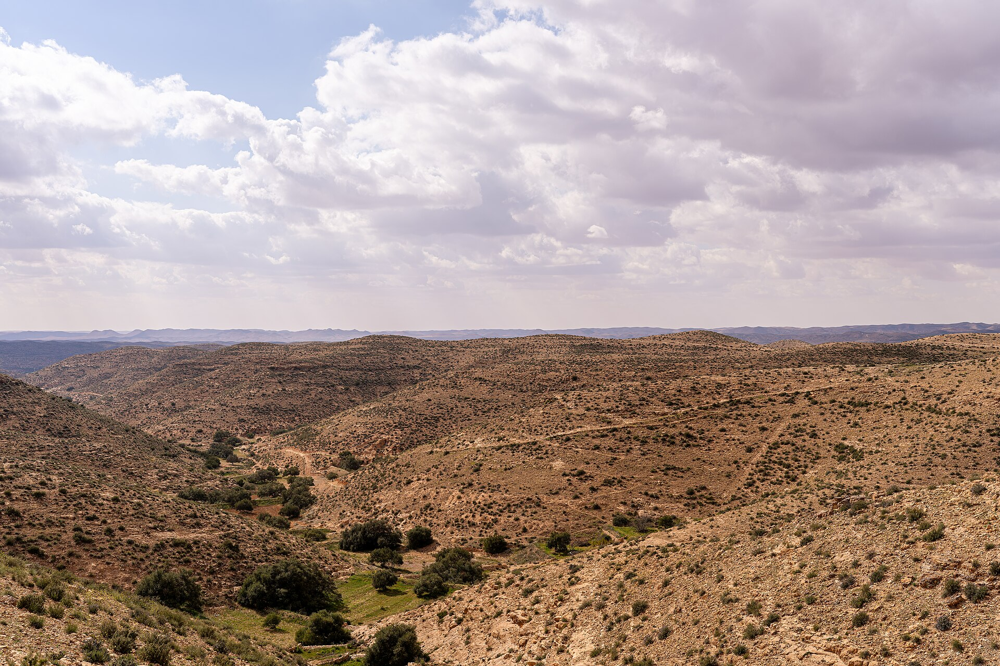

The documentary project · Crowdfunded on-chain
A deluxe photography book and a documentary short film about the first year of a real Tunisian olive grove — from bare soil to the first 1,500 trees. Kickstarter doesn't accept creators from Tunisia, so this book is crowdfunded the same way the grove itself is funded: in USDT, on a public wallet, with every transaction auditable by anyone.
Book fund tally updated with every earmarked on-chain pledge
The land this book documents — 16 hectares of rural Tunisia, owned and waiting for its first 1,500 trees.
Live from the fund
Tally of on-chain pledges earmarked to the book via txid — the wallet itself is public and shows everything.
Why this book exists
The land exists — 16 hectares of rocky, beautiful farmland, bought, not borrowed. What it doesn't have yet is a single olive tree. Over the next twelve months, the first 1,500 go into the ground, and every honest hour of it gets documented: the budget, the failures, the weather, the hired hands, the first green shoots.
This is a photography book about a beginning — what one olive grove actually costs, what a first season actually looks like, and why a country with millions of olive trees still breaks your heart with its beauty. It's also the print extension of the most transparent grove project on the internet: olivegrove.bond, where every donation lands on a public blockchain wallet anyone can audit.
Why not Kickstarter? Because Kickstarter doesn't operate in Tunisia — its creators must be residents of 26 eligible countries. So the campaign runs right here, on the project's own public wallet. No middleman, no platform fee, full transparency.
What your backing creates
A 160-page hardcover photography book, 24×30 cm, printed on 150gsm silk — the full first season from bare soil to 1,500 trees in the ground, budgets and mistakes included.
A 15-minute film shot across the whole season — planting days, irrigation, the first summer survival, and the people who make a grove happen.
A documented community planting day where local farmers learn drip irrigation and organic cultivation — funded by this campaign, printed in the book's appendix.
The honest budget
| 16 Hectares: Year One — full cost breakdown | |
|---|---|
| $3,000 | Documented planting block — the filmed first block (~150 seedlings + drip irrigation for the camera's season) |
| $5,500 | Book design & printing — layout, 400 deluxe hardcover copies |
| $1,500 | The short film — editing, color, licensed score |
| $2,500 | Rewards & shipping — prints, certificates, worldwide freight |
| $1,400 | Processing — exchange conversions and transfer costs (no platform fee — there is no platform) |
| $1,100 | Risk buffer (10%) — agriculture keeps its own schedule |
Every major cost gets published in the updates, same standard as the transparency page.
Backer tiers
| Tier | What you get |
|---|---|
| $5 | Root — your name in the book's Supporters pages and on the online grove wall |
| $15 | Seed — the digital Olive Grower's Starter Kit (planting calendar, variety guide, watering cheat-sheet) + Root |
| $30 | Sapling — the paperback edition + everything above |
| $50 | Tree — the hardcover first printing, numbered + everything above |
| $80 | Flag Tree — hardcover + a numbered canvas certificate for an olive tree planted in your name, carrying your country's flag on the World Grove Challenge wall |
| $150 | Print & Tree — signed hardcover + a numbered 20×30 cm photographic print from the season + Flag Tree |
| $300 | Grove Lane — two Flag Trees, a handwritten letter from the grove, signed hardcover + print (limited 40) |
| $700 | Planting Day Sponsor — sponsor one community training day, your name in the book's appendix documenting it, 2 hardcovers, Flag Tree (limited 8) |
| $2,500 | Producer — Executive Producer credit on the film, 5 hardcovers, 10 Flag Trees, and an invitation to the first-harvest dinner in Tunisia (travel not included — first harvest is expected around 2030, and we say so honestly) (limited 3) |
Tiers are cumulative. Physical rewards ship worldwide from December 2027.
The plan, honest version
| When | What happens |
|---|---|
| Nov 2026 | Site preparation and the first documented planting block |
| Dec–Feb | Planting season — the camera doesn't stop |
| Mar–Jun | Irrigation, first-summer survival, filming continues |
| Jul–Sep 2027 | Edit, design, layout |
| Nov 2027 | Books printed, film finished |
| Dec 2027 | Rewards shipped worldwide, film released to backers |
How to back
1. Send USDT on the TRC-20 network only to the project's public wallet (the same wallet as the grove — one wallet, full history):
TK5UxcvuY57FvcQbsqYqxKxkBvQwrmaDQm
2. Email your txid + chosen tier to anistouati74@gmail.com — that earmarks your pledge to the book fund and puts your name in the right tier. The tally above updates with every confirmed earmark.
Prefer to fund trees directly instead? Plant a tree → · Want your country's flag on the grove wall? Claim a certificate →
Questions
Kickstarter only accepts creators who are permanent residents of 26 eligible countries — Tunisia isn't one of them. So the campaign runs directly on the project's public USDT wallet: no platform fees, no gatekeeper, and every transaction lands on a public ledger anyone can audit.
Send USDT on TRC-20 to the public wallet, then email your txid and chosen tier to anistouati74@gmail.com so the amount is earmarked to the book fund. The tally on this page updates with every confirmed earmark.
The wallet is public and permanent — every transfer is visible on the TRON blockchain forever. The book tally tracks the amounts backers earmark by txid, the same honest manual system the World Grove Challenge wall uses.
The fund scales the project honestly instead of vanishing: around $5,000 the book exists as a smaller print run, at $10,000 the full run, at $15,000 the film and community day join it. Backers above the produced scale get rewards adjusted with extra tree allocations — nothing sits idle.
Printing is scheduled for November 2027 and shipping for December 2027, with a weather buffer built into the schedule. Updates go to the email you backed with — and the big moments land publicly on the grove wall.
Yes — the $80 Flag Tree tier includes the numbered canvas certificate with your country's flag, alongside the hardcover. The grove's certificates are drawn live on the claim page.
 The Olive Grove Project
The Olive Grove Project